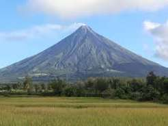
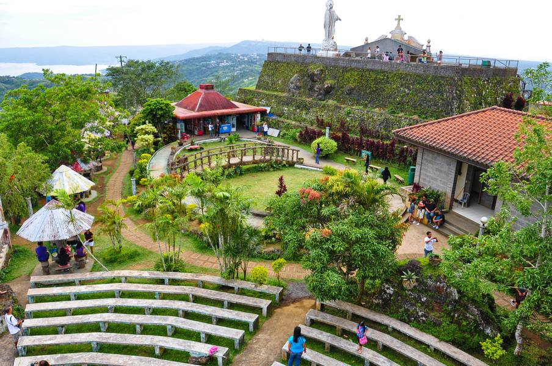

Mayon volcano
Mayon Volcano is a famous active stratovolcano located in Albay Province, Philippines.

Luneta Park, officially Rizal Park, is a 58‑hectare historic urban park in Ermita, Manila—one of the largest green spaces in the city

Banaue
Banaue is a municipality in the province of Ifugao, located in the mountainous northern region of Luzon

Picnic Grove
Next Tagaytay spot is Picnic Grove. Picnic Grove is a must-visit place in Tagaytay.

Pagsanjan Falls
A Bolinao Falls is one of the most popular natural attractions in the Philippines.